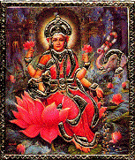
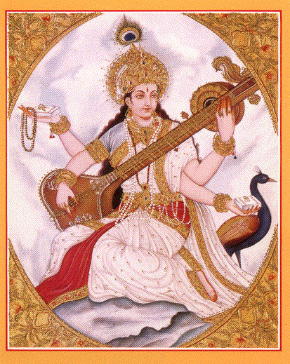

"Wisdom and force are not the only manifestations of the supreme Mother; there is a subtler mystery of her nature and without it wisdom and force would be incomplete things and without it perfection would not be perfect. Above them is the miracle of eternal beauty, an unseizable secret of divine harmonies, the compelling magic of irresistible universal charm and attraction that draws and holds things and forces and being together and obliges them to meet and unite that a hidden Anandamay play from behind the veil and make of them its rhythms and its figures. This is the power of MAHALAKSHMI and there is no aspect of Divine Shakti more attractive to the heart of embodied beings.
Maheshwari can appear too calm and great and distant for the littleness of earthly nature to approach or contain her, Mahakali too swift and formidable for its weakness to bear; but all turn with joy and longing to Mahalakshmi. For she throws the spell ofthe intoxicating sweetness of the Divine: to be close to her is a profound happiness, and to feel her within the heart is to make existence a rapture and marvel; grace and charm and tenderness flowfrom her like light from the sun and wherever she fixes her wonderful gaze or lets fall the loveliness of her smile, thesoul is seized and made captive and plunged into the depths of an unfathomable bliss. Magnetic is the touch of her hands and their and delicate influence refines mind and life and body and where shepresses her feet course miraculous streams of an entrancing Ananda.
And yet it is not easy to meet the demand of its enchanting Power or to keep her presence. Harmony and beauty of the mind andsoul, harmony and beauty of the thoughts and feelings, harmony and beauty in every outward act and movement, harmony and beautyof the life and surroundings, this is the demand of Mahalakshmi.Where there is affinity to the rhythms of the secret world-bliss and response to the call of the All-Beautiful and concord and unity and the glad flow of many lives turned towards the Divine, in that atmosphere she consents to abide. But all that is ugly and mean and base, all that is poor and sordid and squalid, all that is brutal and coarse repels her advent.
Where love and beauty are not or are reluctant to be born she does not come; where they are mixed and defigured with baser things, she turns soon to depart or cares little to pour her riches.If she finds herself in men´s hearts surrounded with selfishness and hatred and jealousy and malignance and envy and strife, if treachery and greed and ingratitude are mixed in the sacred chalice, if grossness of passion and unrefined desire degrade devotion, in such hearts the gracious and beautiful Goddess will not linger. A divine disgust seizes upon her and she withdraws, for she is not one who insists or strives; or, veiling her face,she waits for this bitter and poisonous devil's stuff to be rejected and disappear before she will found anew her happy influence.
Ascetic bareness and harshness are pleasing to her nor the suppression of the heart´s deeper emotions and rigid repression of the soul´s and the life´s parts of beauty. For it is through love and beauty that she lays on men the yoke of the Divine. Life is turned in her supreme creations into a rich work of celestial art and all existence into a poem of sacred delight; the world´s riches are brought together and concerted for a supreme order and even the simplestand commonest things are made wonderful by her intuition of unity and the breath of her spirit.
Admitted to the heart she lifts wisdom to pinnacles of wonder and reveals to it the mystic secrets of the ecstasy that surpasses all knowledge, meets devotion with the passionate attraction of the Divine, teaches to strength and force and the rhythm that keeps the might of their acts harmonious and in measure and casts on perfection the charm that makes it endure."
Ref. Sri Ghosh Aurobindo "Mother"
